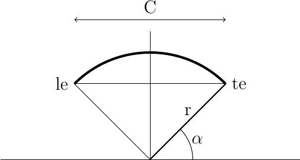
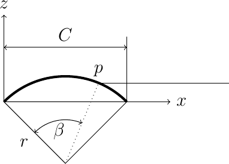
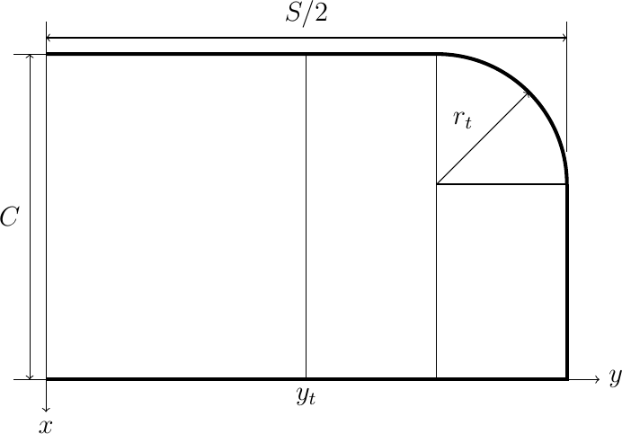
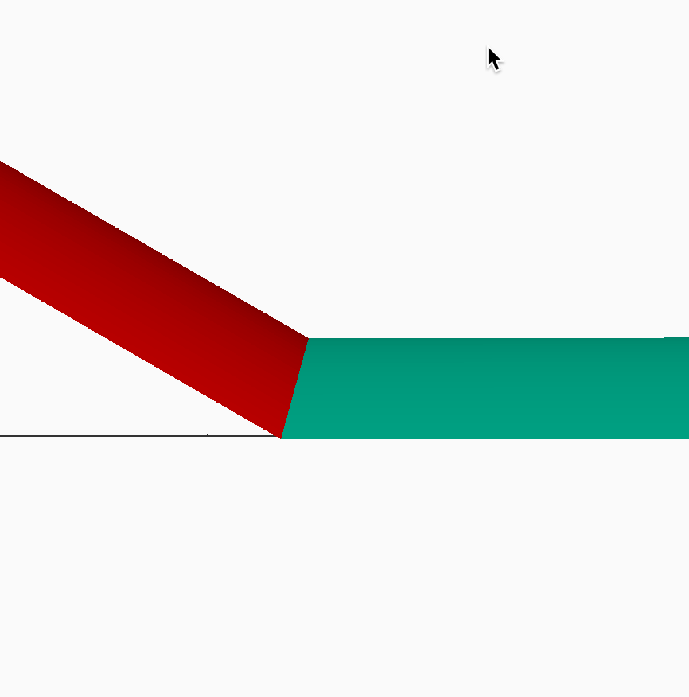
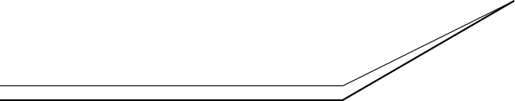
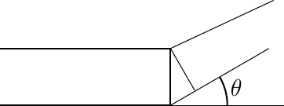

Read time: 16.1 minutes (1613 words)
Generating Covering¶
Building the basic framework of an indoor model airplane with OpenSCAD is fairly easy. Covering is another matter entirely. There is no simple way to generate a thin film that covers flying surface frameworks using just OpenSCAD. We need to take another approach.
Since we are using math to figure out a lot of this design, let’s see what we can do if we think this through.
STL Files¶
OpenSCAD is a 3D solid modeling tool most often used in generating 3D printer products. Part of that generation process involves converting the 3D objects into STL files. These files are then post-processed to generate input data files for the 3D printer. An STL file is a (long) list of triangles that “wrap” the surface in question. These triangles are all connected in such a way that the surface is called water tight, meaning there are no gaps anywhere. If the triangles are big, the surface will not resemble the original shape very much, but if we make them tiny, he resulting surface will look very good. What this means is that our entire model can be reduced to a giant list of triangles surrounding the structure. The closer the points on these triangles are to each other, the closer our approximation to the real shape gets.
Typically, indoor models are covered using a very thin film. Suppose we generate a grid of points that sit on the surface we want to represent our covering. The grid will represent a set of quadrilateral (four point) areas on that surface. We can draw a diagonal across each quad surface to produce two triangles. Then we “extrude” these upward a tiny amount to represent a chunk of film.This is exactly what an STL file looks like.
The thickness of the film is not important here. We only need it to be thick enough to be visible in OpenSCAD. Traditionally, film weights are given in terms of surface area, not volume. As long as we know what thickness we have set up for our digital film, we can transform the volume we calculate for our covering into a surface area and get the weight we need to weight and balance calculations.
Function Grapher¶
Suppose you can build a mathematical function describing the covering surface you need:
Our challenge is to create a two-dimensional matrix of points covering each segment of a flying surface. The surface function will tell us the height of the surface at each point. Each point will be recorded using the X, Y, and Z (height) values for the covering surface. Python can write these points out so that OpenSCAD can read the file produced. Sounds simple enough for a Python programmer.
Justin Lin created a tool for displaying a 3D function, input as a collection of 3D points, using the polyhedron tool in OpenSCAD. His function takes the rectangular array of 3D X-Y-Z points and extrudes them to create a surface with a user defined thickness in the Z direction. Justin has a library that uses this scheme on his website, and I started off by extracting just part of that his for use in this project. This scheme is suitable for indoor models, but will not work for more general model building, so I plan on replacing this code at a later time.
Generating Covering Points¶
The challenge in using this approach is generating the matrix of points. I elected to do this work in Python, and created a function that generates the needed point array we can use for the covering.
The basic scheme used involved nested loops that create the grid. If we have nx points in the X direction, and ny points in the Y idirection, the loop setup looks like this:
dx = chord / nx
dy = span / ny
points = []
for i in range(ny+1):
y = i * dy
xpoints = []
for j in range(nx+1):
x = j * dx
z = surface_height(x,y)
xpoints.append([x,y,z])
points.append(xpoints)
Here, we are creating our surface data matrix as a “list of lists”, which is how you do this in Python.
Let’s look at the rib height function we will use for the wing and stab center sections.
Rib Height¶
Here is our basic geometry:

From this figure, we can generate two equations:
Here C is the rib chord and t is the rib thickness. We need to figure out the radius, r and the angle :math`alpha`.
Rather than doing this manually, let’s introduce Python SymPy, a neat tool you wish you had back in your school days.
Here is a piece of code that will give up the results we are after:
import sympy
r,c,t,alpha = \
sympy.symbols('r c t alpha')
eq1 = 2 * r * sympy.cos(alpha) - c
eq2 = r - r * sympy.sin(alpha) - t
sol = sympy.solve([eq1,eq2],[r,alpha])
print(sol)
SymPy requires that you name your equations, and set them up as expressions that evaluate to zero. So we move the left-hand side of each equation over to the right and come up with some usable name.
The neat feature is the line where we solve these two equations for the two unknowns. SymPy will produce the solutions we are after!
Here they are, nicely formatted:
The first solution gives us the arc radius, the second on gives \(\alpha\).
Let’s check these equations out with a little Python code.
import math
c = 5.0 # chord
camber = 5.0 # percent of c
t = camber * c
r = c**2/(8*t) + t/2
alpha = math.acos(4*c*t'(c**2 + 4*t**2)) * 180.0/math.pi
print(r, alpha)
Here is what we get:
As check, let’s calculate the thickness using these values:
thickness = r - r * math.sin(alpha * math.pi/180.0)
print(thickness)
That is what we expect, so things look fine.
Rib Height¶
To generate the height function needed to create our covering data array, we need a bit of geometry. Since we are using a circular arc airfoil, the figure below show basically what we need to generate the function:

The height of the rib at some point \(P\) is given as follows:
Given a camber, chord, and radius, we can come up with the following equations:
That last equation is the general equation for a circle centered at \((w,y)\). We need to solve these equations for the height, \(z\). SymPy to the rescue!
For some specified \(x, r, w, and h\) we want to find the height, \(z\): SymPy to the rescue!
import sympy
x,z,h,w,r,c,t,beta = sympy.symbols('x z h w r c t beta')
eq3 = (x-w)**2 + (z-h)**2 - r**2
sol2 = sympy.solve(eq3, z)
print(sol2[1])
Let’s make some substitutions. First, we eliminate \(w\):
eq4 = sol2[1]
eq5 = eq4.subs(w,c/2)
print(eq5)
Next, we eliminate \(h\):
eq6 = eq5.subs(h,t-r)
print(eq6)
Now we have an equation we can use to build our height function.
Here it is:
def rib_height(chord, camber, x):
"""return the height for some fraction of the chord x"""
c = chord
x = x * c
t = camber * chord / 100
r = chord**2/(8*t) + t/2
return -r +t + math.sqrt((-c/2 + r + x)*(c/2 + r - x))
Let’s test this out. The height at the midpoint should be the thickness:
print(rib_height(5,5,0.5))
This gives us the height function needed for the circular arc airfoil. Next we need to work on the wing outline.
Wing Outline¶
The wing is constructed using s rectangular center section and two rectangular tip sections with a rounded leading edge. Here is the geometry we are using:

In this figure, we need to provide four parameters:
Which chord
Total wingspan
Center section span
Tip radius
Note
In this figure, the total span is the flat span, not the span set by the rules. The rules ilmit the span with dihedral!
The leading edge offset, beginning where the circular section starts is defined by another general circle equation. Let’s consider a coordinate system positioned at the start of the leading edge arc. Here is the equation for the tip arc:
SymPy will give us our equation:
import sympy
x,y,r = sympy.symbols('x y r')
eq7 = (x-r)**2 + y**2 - r**2
sol3 = sympy.solve(eq7, x)
print(sol3[0])
This equation gives us the leading edge offset along the arc. A function that gives us that offset for some percentage of the wing span looks like this:
def xle(s, r, y):
"""s is the half span, r is the tip radius and Y ranges from 0 to 1"""
if y < s - r:
return 0
yt = y = (s - r)
return r - math.sqrt((r-yt)*(r + yt))
We now have all the pieces needed to generate the covering for our model.
Covering grid¶
As discussed earlier, we will generate the covering matrix by dividing up the chord into nx points, and the span into ny points. Remember, we will be generating covering shapes for each part of the model, not the assembled parts.
Wing and Stab Center Sections¶
For the wing and stab, the grid is simple. We set up simple loops to generate X,Y pairs, and use the height function to find the height.
Note
There is a subtle point here. The ribs normally start at the inner edge of the leading edge and trailing edges. That means our airfoil is not really a pure circular arc. Rather than complicate things, I am gong to generate the covering as an arc, and position it so it connects to the leading and trailing edge outer points. Visually, this will be fine and the analysis will still be good. The covering will “float” above the actual framework a tiny amount.
Tip sections¶
The tip sections are more of a puzzle. They will be canted upward to generate the dihedral. Modelers normally build and cover the wings flat, and deal with the covering at the joint using a variety of schemes. To make thing look proper in OpenSCAD we need to do better.
Here is a look at the junction of two circular arc sections joined at some dihedral angle:
{kind=link}
If you look closely, the intersection is along a plane cutting through this joint at an angle (one half of the dihedral). That means the end rib should really be canted on the center section, something builders do not so.
Therefore, the joint we are going to create will not be a circular arc on the tip, but a slight ellipse. The tip covering starts at the edge of yhe center section, which we can calculate easily. There will be no rib at the inner edge of the tip, but we can use the center section rib points, suitably transformed to figure out the tip covering edge.
Phew!.
Here is the geometry we are dealing with:

In this figure, we assume the tip covering runs in a straight line from the center section to the flat tip rib. (Close enough for this study!)
But this means that our rib height function will not work for the tips. Instead, we need to use a straight line running from center section o the the tip and find the height of that line as needed. More math work!
Consider the general equation defining a line in 3D space:
Given two points in 3D space:
Now, we define these constants:
Then this equation defines the line:
If we set one coordinate value we can calculate the other two from this.
The only remaining problem is finding the set of points that represent the inner edge of the tip covering surface. For this, we need to do a simple transformation.

If the height of the rib at this edge is \(h_r\), then the length of the position along the tip leading edge is:
And the height of the tip covering at this point is:
Now, finally we have all the pieces to write the covering module!